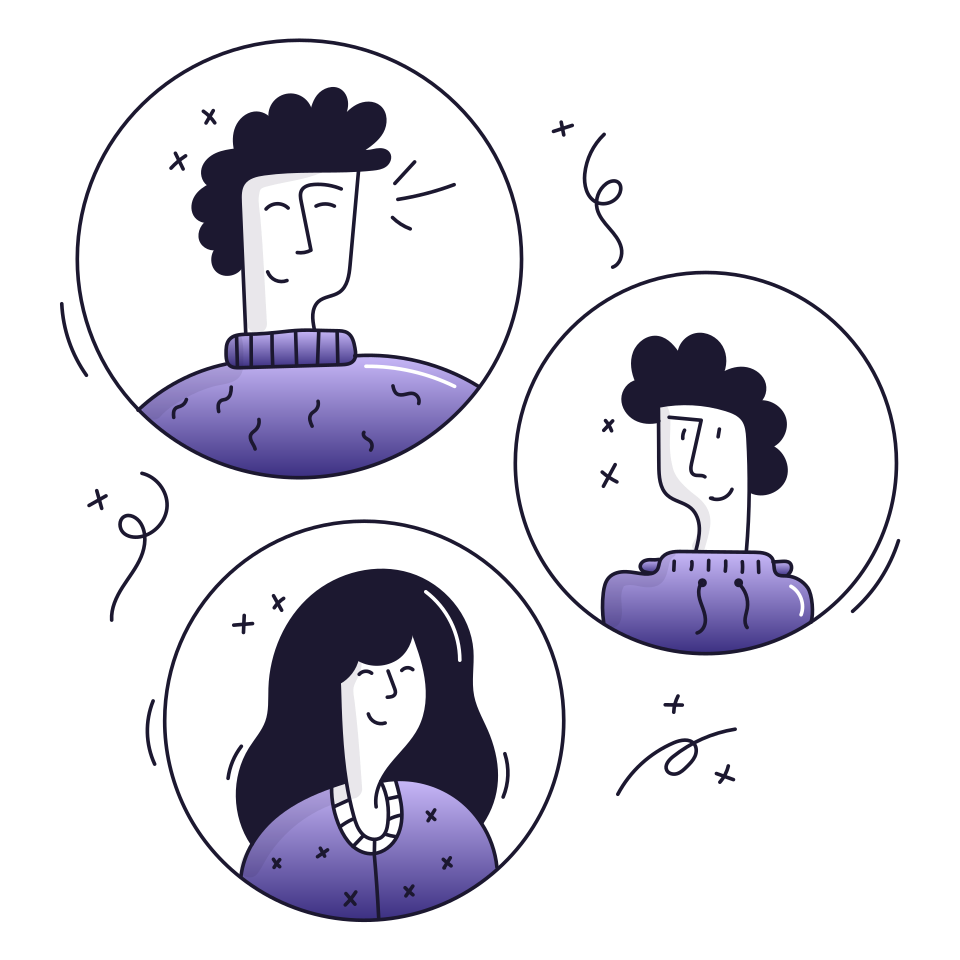

Click · front-page concepts · 6 directions · canonical palette
Six takes on the Click landing page. The three illustrated concepts (04, 05, 06) match the flat-illustration references you shared: 04 is the lead, 05 goes bold and color-blocked, 06 goes airy and minimal. The earlier three (01 to 03) are typographic. All share one palette from CLICK_PALETTE.md (deep purple, lavender, cream) and the anti-slop rules from taste-skill and impeccable: distinctive type, tinted ink (never pure black or gray), no gray-on-colour, no card soup, one orchestrated load.

Notes: your earlier drafts in design-samples/01-03 (blue/orange) are untouched. These live in design-samples/canonical/ and follow the canonical purple/lavender palette from context/DESIGN.MD, which differs from the live globals.css (electric-lime) — porting a winner means re-skinning the live tokens. Concept 04 adds one lime accent (not in DESIGN.MD, but it bridges reference #3 and your live app) and uses Popsy’s free illustration set, recolored to brand tokens and stored locally in illus/.